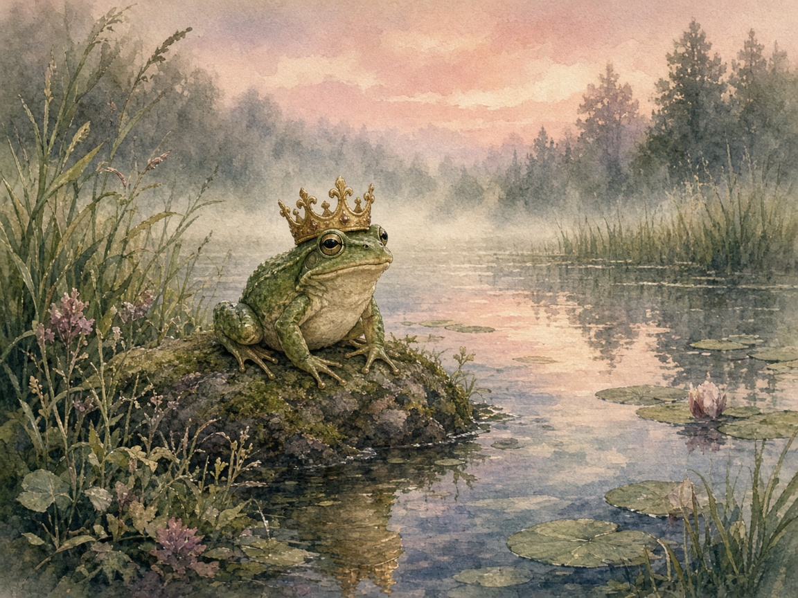
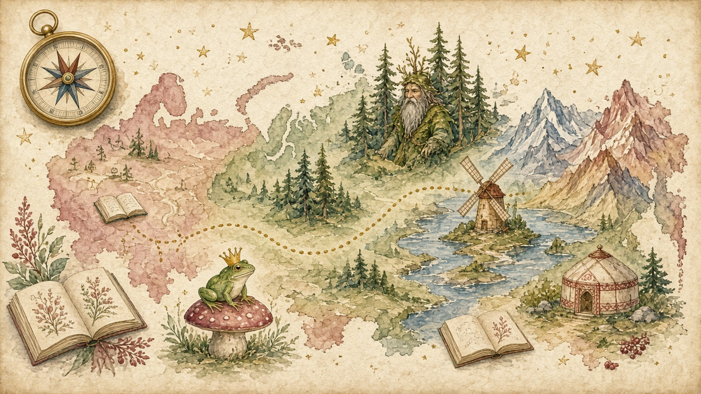
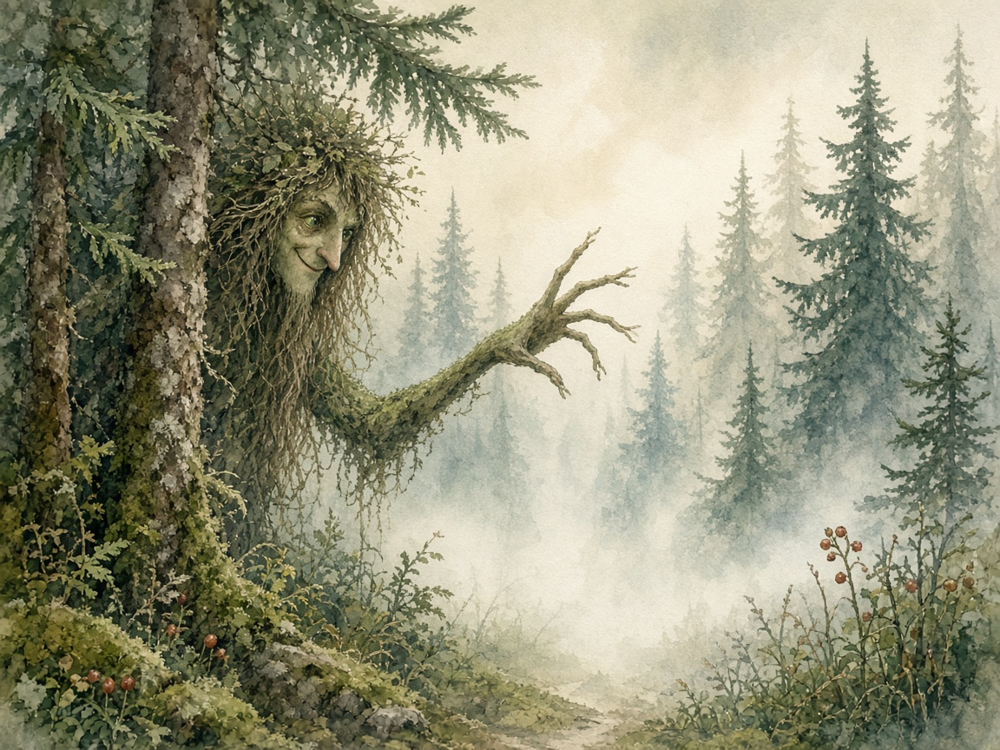
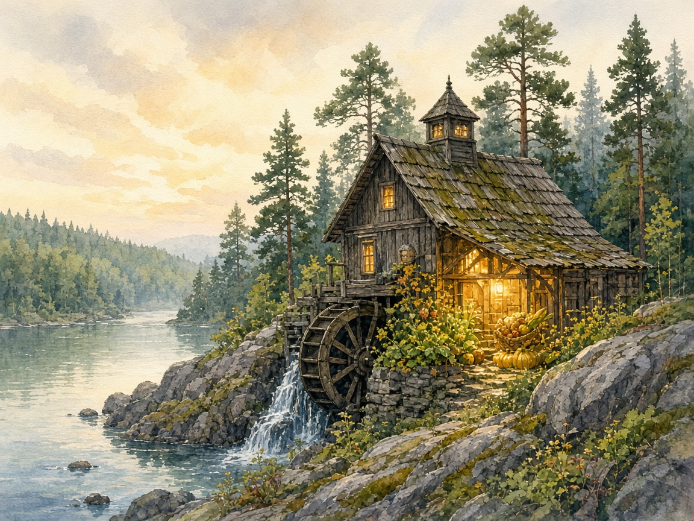
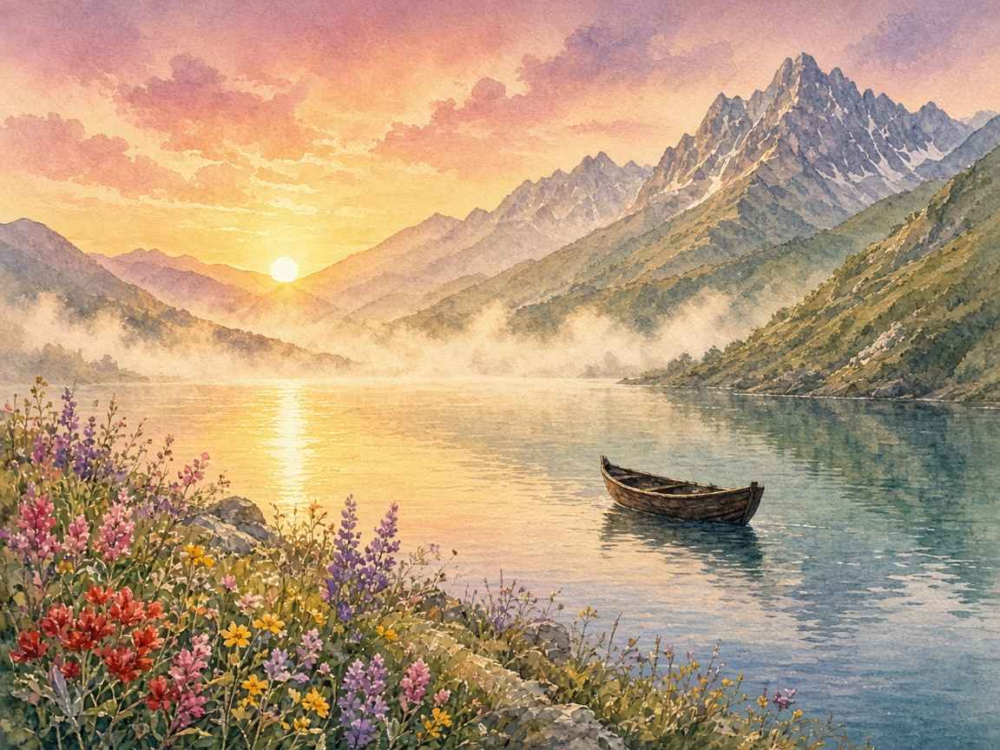
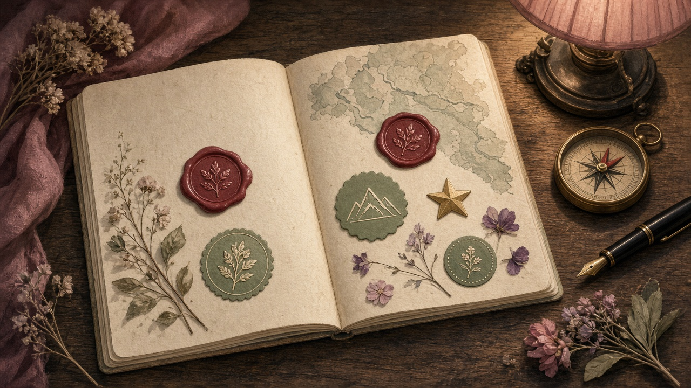

01Встреча
Иллюстрация, аудио или короткий фрагмент.
Проект литературной школы «Читательство»
Проект на базе школы: сказки народов России можно узнать через игру и приключение. Семьи, библиотеки и регионы получают бесплатный доступ к платформе и так знакомятся с «Читательством».
Создан на базе литературной школы, чтобы о «Читательстве» узнавали семьи, библиотеки и регионы. Это открытый раздел сайта: карта сказок народов России, короткий маршрут и вход в занятия школы. Для детей 6–11 лет и взрослых рядом.
Через игру и приключение: открыть регион, послушать фрагмент, найти деталь в тексте, выполнить задание, оставить рисунок или письмо, получить отметку в читательском паспорте. 10–15 минут на одну историю.
Даём бесплатный доступ на платформу: первая мини-экспедиция, карта, 1–2 истории в регионе, короткое аудио, одно задание и бейдж. Семья видит, как устроены занятия школы. Дальше — уроки, маршруты и живые встречи.

Как это устроено
Сначала возраст и интерес. Дальше — одна карточка и отметка в паспорте.

01Иллюстрация, аудио или короткий фрагмент.

02Что заметить в тексте: предмет, жест, повтор.

03Чего хотел, что выбрал, что почувствовал.

04Похожий мотив в сказке другого края.

05Письмо, рисунок, продолжение. Штамп в паспорте.
Короткие истории, крупные картинки, аудио, одно задание.
Поиск деталей, вопрос о выборе, сравнение сюжетов.
История и 3–4 вопроса для разговора после чтения.
Карта и карточка
Регион открывает мини-урок: статус источника, фрагмент, миссия читателя, похожие сюжеты.
6–8 лет · Ярославская область. Зачем Иван сжигает шкурку?
9–11 лет · Татарстан. Какая деталь помогает герою уйти?
Семья · Карелия. Что происходит с предметом, когда его делят?
Партнёрам
Маршрут живёт на платформе. Его можно пройти дома и провести у вас: в библиотеке, школе, музее или на фестивале.
Ребёнок и семья открывают карту дома: история, задание, паспорт. 10–15 минут на одну сказку.
Бесплатный вход — первое знакомство со школой. Дальше можно перейти к урокам.
Даём готовые идеи для занятия в вашем пространстве: сценарий часа, QR на маршрут, карточка, полка книг.
Ведущий библиотеки, школы или музея проводит встречу сам.
Возможна организация занятия командой школы: педагог ведёт встречу у вас.
Тот же маршрут можно провести онлайн — если удобнее подключиться удалённо.
Формат выбираем вместе: онлайн, очно или смешанно — под вашу площадку, возраст и календарь.
Следующий шаг
Библиотеки-участники появляются на общей интерактивной карте — с подборкой книг по сказкам своего края.
Общая картаКаждая площадка добавляет точку: край, библиотека и полка книг по сказкам региона. Так складывается одна интерактивная карта чтения.
Предлагаем короткую встречу: показать маршрут и обсудить, как ваша площадка появляется на карте.
Перед запуском будет готово 12 маршрутов-историй.
info@chitatelstvo.ru
chitatelstvo.ru
Ольга Рощина · 8 905 473-83-70 · тг @olgaroshchina